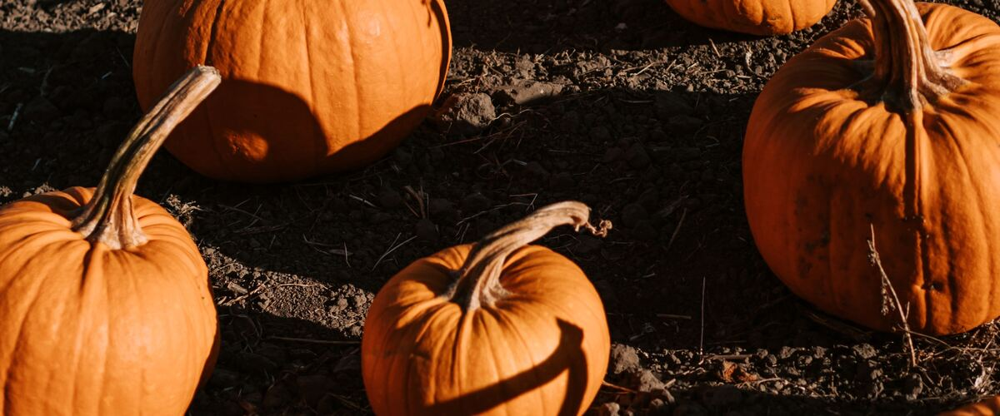

Oregon · Washington · Idaho
When to plant pumpkins
Plant in the garden: Portland and Seattle May 15 – Jun 5; Spokane May 20 – Jun 10; Boise May 1–22; Bend Jun 9–30.
Your dates in
Pumpkins are winter squash with round, usually orange fruit, grown for carving and for pies, soups and roasted seeds. Small, sweet pie pumpkins have finer, less stringy flesh than big carving types. Hull-less (naked seed) varieties grow seeds without shells, made for roasting.
Puts pumpkins on your free plan, with dates for your town and a spot in your beds.
- Difficulty
- Moderate
- Sun
- Full sun
- Spacing
- 4 to 6 feet apart in hills; giant types need 15 feet or more
- Planting depth
- 1 inch deep
- Frost
- Killed by frost
- First harvest
- About 105 days after planting
For Halloween pumpkins, get plants in the ground by early June. Pie pumpkins and medium carving types ripen reliably here; giant pumpkins need a long, warm season and a lot of space and water.
Pumpkin planting dates
| Towns | Start seeds indoors | Plant in the garden |
|---|---|---|
| Portland, OR, Seattle and Tacoma, WA | Apr 17–24 | May 15 – Jun 5 |
| Spokane, WA, Astoria, OR | Apr 22–29 | May 20 – Jun 10 |
| Boise and Meridian, ID | Apr 3–10 | May 1–22 |
| Bend and Redmond, OR | May 12–19 | Jun 9–30 |
Dates for six main cities. For any of the other 80 towns, type it in the box at the top of the page or browse all towns.
| Gresham, OR, Hillsboro and Beaverton, OR, Oregon City and West Linn, OR, Portland, OR, St. Helens and Scappoose, OR, Wilsonville and Canby, OR | Apr 17–24 | May 15 – Jun 5 |
|---|
| Corvallis and Albany, OR, Cottage Grove, OR, Eugene, OR, McMinnville and Newberg, OR, Salem, OR | Apr 17–24 | May 15 – Jun 5 |
|---|
| Ashland and Talent, OR, Grants Pass, OR, Medford, OR, Roseburg, OR | Apr 17–24 | May 15 – Jun 5 |
|---|
| Astoria, OR, Brookings and Gold Beach, OR, Coos Bay and North Bend, OR, Newport and Lincoln City, OR, Tillamook, OR | Apr 22–29 | May 20 – Jun 10 |
|---|
| Bend and Redmond, OR, Klamath Falls, OR | May 12–19 | Jun 9–30 |
|---|---|---|
| Burns, OR | May 14–21 | Jun 11 – Jul 2 |
| Lakeview, OR | May 7–14 | Jun 4–25 |
| Madras, OR | Apr 27 – May 4 | May 25 – Jun 15 |
| Prineville, OR | May 4–11 | Jun 1–22 |
| Baker City, OR, Enterprise and Joseph, OR | Apr 27 – May 4 | May 25 – Jun 15 |
|---|---|---|
| Hermiston, OR, Hood River, OR, Ontario, OR, Pendleton, OR, The Dalles, OR | Apr 3–10 | May 1–22 |
| John Day, OR | Apr 30 – May 7 | May 28 – Jun 18 |
| La Grande, OR | Apr 22–29 | May 20 – Jun 10 |
| Bremerton and Port Orchard, WA, Everett, WA, Kent, Renton and Auburn, WA, Olympia, WA, Seattle and Tacoma, WA, Shelton, WA | Apr 17–24 | May 15 – Jun 5 |
|---|
| Anacortes, WA, Bellingham, WA, Friday Harbor and the San Juans, WA, Mount Vernon and Burlington, WA, Oak Harbor and Whidbey Island, WA | Apr 17–24 | May 15 – Jun 5 |
|---|
| Aberdeen and Hoquiam, WA, Forks, WA, Long Beach and Ilwaco, WA | Apr 22–29 | May 20 – Jun 10 |
|---|---|---|
| Port Angeles, WA, Port Townsend, WA, Sequim, WA | Apr 17–24 | May 15 – Jun 5 |
| Centralia and Chehalis, WA, Longview and Kelso, WA, Vancouver, WA | Apr 17–24 | May 15 – Jun 5 |
|---|
| Chelan, WA, Wenatchee, WA | Apr 3–10 | May 1–22 |
|---|---|---|
| Leavenworth, WA, Omak and Okanogan, WA, Winthrop and Twisp, WA | Apr 22–29 | May 20 – Jun 10 |
| Ellensburg, WA, Goldendale, WA | Apr 22–29 | May 20 – Jun 10 |
|---|---|---|
| Ephrata and Quincy, WA, Moses Lake, WA, Sunnyside, Grandview and Prosser, WA, Tri-Cities (Pasco, Kennewick, Richland), WA, Walla Walla, WA | Apr 3–10 | May 1–22 |
| Yakima, WA | Apr 10–17 | May 8–29 |
| Colville, WA, Pullman, WA, Spokane, WA | Apr 22–29 | May 20 – Jun 10 |
|---|
| Bonners Ferry, ID, Coeur d'Alene and Post Falls, ID, Sandpoint, ID | Apr 22–29 | May 20 – Jun 10 |
|---|
| Lewiston, ID | Apr 3–10 | May 1–22 |
|---|---|---|
| Moscow, ID | Apr 22–29 | May 20 – Jun 10 |
| Boise and Meridian, ID, Emmett, ID, Nampa and Caldwell, ID | Apr 3–10 | May 1–22 |
|---|---|---|
| McCall, ID | May 25 – Jun 1 | Jun 22 – Jul 13 |
| Burley and Rupert, ID, Idaho Falls, ID, Pocatello, ID, Rexburg, ID, Twin Falls, ID | Apr 22–29 | May 20 – Jun 10 |
|---|---|---|
| Salmon, ID | Apr 27 – May 4 | May 25 – Jun 15 |
Pumpkin year at a glance
| Task | J | F | M | A | M | J | J | A | S | O | N | D |
|---|---|---|---|---|---|---|---|---|---|---|---|---|
| Start indoors | Apr | |||||||||||
| Plant | May | Jun | ||||||||||
| Harvest | Sep | Oct |
Around Portland. Colder towns, especially east of the Cascades, run a few weeks later; the table above has your town's planting dates.
How to grow pumpkins
- Start seeds indoors on your city's dates in trays or small pots under a grow light or in your sunniest window. Or skip this step and buy young plants (starts) at a garden center.
- Harden off the young plants: about a week before planting, set them outside for a few hours a day, a little longer each day.
- Plant them in the garden on your city's dates, 4 to 6 feet apart in hills; giant types need 15 feet or more. If you plant seeds instead, sow them 1 inch deep.
- Water deeply once or twice a week rather than a little every day, and mulch once the soil is warm.
- Harvest: Cut pumpkins when the rind is fully colored and too hard to dent with a fingernail, leaving 3 to 4 inches of stem. Bring them in before a hard frost.
Growing pumpkins in your part of the Northwest
The same plant behaves differently on the wet west side, the foggy coast and the dry, colder east side.
West-side valleys
Willamette Valley, Puget Sound, southern Oregon
Pumpkins planted by early June usually ripen by October. Lift the fruit off wet soil on a board or straw to prevent rot.
Coast
Oregon and Washington coast
Large pumpkins rarely ripen in cool coastal summers. Small pie pumpkins are a better bet.
East of the Cascades
Columbia Basin, Yakima, Boise, Spokane, north Idaho
Hot summers suit pumpkins. Water deeply at the roots and keep an eye out for squash bugs.
High desert and mountain towns
Central Oregon, high eastern Oregon valleys, McCall, Salmon
Grow small, quick varieties and plant after the last frost. Harvest before hard frost.
More pumpkin varieties
More widely sold picks that do well somewhere in the Northwest. The tag says which part of the Northwest suits each one best.
Howden
The original jack-o'-lantern pumpkin: round, deep orange, 20 to 25 pounds, with a sturdy handle. Plant by early June for Halloween.
Both sides
Small Sugar
A small, sweet heirloom pumpkin of about 5 to 8 pounds with smooth flesh for pies. It ripens more reliably here than big carving types.
Both sides
Jack Be Little
Tiny, flattened orange pumpkins that fit in your palm, many per vine. Great for decorations and for kids, and they keep for months.
Both sides
Cinderella (Rouge Vif d'Etampes)
Deep red-orange, flattened, ribbed pumpkins that look like a fairy-tale coach. Good for both decorating and cooking.
Both sides
Atlantic Giant
The variety behind most giant pumpkin records. In the Northwest it needs an early start indoors, a large sunny plot and a lot of water and feeding.
Both sides
How much to grow
How many to plant
For a family of four, 2 to 4 plants. Each vine needs 50 to 100 square feet.
What to expect
About 2 to 5 pumpkins per plant for medium sizes.
Storing the harvest
Cure in a warm room for a week or two. Keep at 50 to 55°F for two to three months.
What to plant after pumpkins
Around Portland, the pumpkin harvest wraps up around October. These crops can still go into the same bed, and they come from a different plant family, which helps with rotation.
Portland dates. Pick your town at the top of the page for yours.
Key numbers
- 70–90°FSoil to sprout
- 90–120Days to harvest
- 25–50 sq ftSpace per plant
- Powdery mildewBiggest risk
Top care tip: Water deeply at the base and slip a board or straw under each pumpkin to keep it off damp soil.
Growing notes
What makes the difference in Northwest gardens, in plain language.
Timing for Halloween
Most carving pumpkins need 90 to 110 days from planting to ripe. Count back from early October: in most of the Northwest that means plants should be in the ground by late May or early June. Starting them indoors three to four weeks early gives you a head start in cool springs. Pumpkins that ripen in September keep fine in a cool, dry spot until Halloween.
Space, feeding and pollination
Pumpkin vines run 10 to 20 feet. Give each plant a hill of soil mixed with plenty of compost, and let the vines sprawl, or grow small pie types on a sturdy fence. They're heavy feeders and need deep watering once or twice a week, especially once fruit starts to swell.
Each plant has separate male and female flowers. Bees move the pollen; if young fruits shrivel, pollination failed. You can help by brushing pollen from a male flower onto the center of a female one (the one with a tiny pumpkin behind it) in the morning.
Ripening and curing
A ripe pumpkin is fully colored, has a hard rind and sounds hollow when tapped. Cut it with a few inches of stem, never carry it by the stem, and cure it somewhere warm for about a week to harden the skin. Bring them in before a hard frost, which damages the rind and shortens storage.
Good neighbors and crop rotation
Good neighbors
- Corn. Pumpkin vines shade the soil under the stalks.
- Nasturtiums. Draw bees that pollinate the flowers.
Squash family: Move squash, pumpkins, cucumbers and melons to a new bed each year and return every three years, so soil-borne wilts and root rots don't build up. Clear and compost (or bin) mildewed vines in fall.
Pests and problems
What most often goes wrong with pumpkins in Northwest gardens, how to spot it and what to do.
Powdery mildew
Signs: White coating on the leaves in late summer.
What to do: Resistant varieties, airflow and watering at the base.
Poor fruit set
Signs: Flowers drop without fruit forming.
What to do: The first flowers are male. Hand-pollinate early female flowers in cool weather.
Rot where fruit touches soil
Signs: Soft spots on the bottom.
What to do: Set ripening pumpkins on a board or straw.
Common questions about growing pumpkins
When should I plant pumpkins in Oregon, Washington and Idaho?
Plant in the garden: May 15 – Jun 5 in Portland and Seattle, May 20 – Jun 10 in Spokane, May 1–22 in Boise and Jun 9–30 in Bend. Pick your town at the top of the page for your own dates.
When should I plant pumpkins for Halloween?
Late May to early June for most varieties. Check the days to maturity on the seed packet and count back from early October.
Why are my baby pumpkins turning yellow and falling off?
They weren't pollinated. It's common early in the season or in cool, rainy weather when bees are scarce. Later fruits usually set fine, or hand-pollinate in the morning.
Can I grow a giant pumpkin here?
Yes, but it needs a long season, a sunny spot of several hundred square feet, rich soil and lots of water. Start indoors and plant out as soon as it's warm.
See what else to plant in April, May or June.